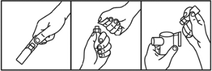

|
 |
| НОВАТРОН (NOVATRON) salbutamol раствор д/ингаляций | ||||||||||||||
|
Клинико-фармакологическая группа: Бронхолитический препарат - бета2-адреномиметик Номер и дата регистрации: ЛП-004431 от 28.08.17 Код ATX: R03AC02 |
Владелец регистрационного удостоверения: зарегистрировано и произведено Представительство: | |||||||||||||
Форма выпуска, состав и упаковка Раствор для ингаляций в виде прозрачной, от бесцветной до слегка коричневатого или желтовато-коричневатого цвета жидкости.
Вспомогательные вещества: натрия хлорид - 9 мг, 0.05М раствор серной кислоты - до рН 3.0-5.0, вода д/и - до 1 мл. 2.5 мл - ампулы из полиэтилена низкой плотности (10) - пакеты из пленки фольгированной (1) - пачки картонные. Раствор для ингаляций в виде прозрачной, от бесцветной до слегка коричневатого или желтовато-коричневатого цвета жидкости.
Вспомогательные вещества: натрия хлорид - 9 мг, 0.05М раствор серной кислоты - до рН 3.0-5.0, вода д/и - до 1 мл. 2.5 мл - ампулы из полиэтилена низкой плотности (10) - пакеты из пленки фольгированной (1) - пачки картонные. | ||||||||||||||
| ||||||||||||||
Описание препарата основано на официально утвержденной инструкции по применению и утверждено компанией-производителем для издания 2022 г. | ||||||||||||||
Фармакологическое действие |
Фармакокинетика |
Показания |
Режим дозирования |
Побочное действие |
Противопоказания |
Беременность и лактация |
Особые указания |
Передозировка |
Лекарственное взаимодействие |
Условия хранения и сроки годности |
Условия реализации
Фармакологическое действие
Бронхолитический препарат. В терапевтических дозах оказывает выраженное стимулирующее действие на β2-адренорецепторы бронхов, кровеносных сосудов и миометрия. Практически не оказывает действия на β1-адренорецепторы сердца. Оказывает выраженный бронхолитический эффект, предупреждая или купируя спазм бронхов, снижает сопротивление в дыхательных путях, увеличивает жизненную емкость легких. Увеличивает мукоцилиарный клиренс (при хроническом бронхите до 36%), стимулирует секрецию слизи, активирует функции мерцательного эпителия. Может приводить к снижению числа β-адренорецепторов. Обладает рядом метаболических эффектов: снижает концентрацию ионов калия в плазме, влияет на гликогенолиз и выделение инсулина, оказывает гипергликемический (особенно у пациентов с бронхиальной астмой) и липолитический эффект, увеличивает риск развития ацидоза. В рекомендуемых терапевтических дозах не оказывает отрицательного влияния на сердечно-сосудистую систему, не вызывает повышения АД. В меньшей степени, по сравнению с лекарственными средствами этой группы, оказывает положительное хроно- и инотропное действие. Вызывает расширение коронарных артерий. После применения ингаляционных форм действие развивается быстро, начало эффекта – через 5 мин, максимум – через 30-90 мин (75% максимального эффекта достигается в течение 5 мин), продолжительность – 3-6 ч. Фармакокинетика
Всасывание и распределение Во время ингаляции 10-20% ингалируемой дозы достигает мелких бронхов, остальная часть оседает в верхних отделах дыхательных путей. После ингаляционного применения системная абсорбция – быстрая, но низкая. Связывание с белками плазмы - 10%. Проникает через плацентарный барьер. Метаболизм и выведение Подвергается пресистемному метаболизму в печени и в кишечной стенке, посредством фенолсульфотрансферазы инактивируется. Т1/2 – 4-6 ч. Выводится почками (69-90%), преимущественно в виде неактивного фенолсульфатного метаболита (60%) в течение 72 ч и с желчью (4%). Показания
Режим дозирования
Препарат Новатрон применяют ингаляционно с помощью ингаляторов-небулайзеров (см. "Порядок работы с препаратом"). Взрослые, в т.ч. пациенты пожилого возраста, и дети старше 18 месяцев: обычная разовая доза – 2.5 мг, при применении 3-4 раза/сут с помощью ингаляций через небулайзер. В случае необходимости доза может быть увеличена до 5 мг 3-4 раза/сут. Для лечения тяжелой обструкции дыхательных путей у взрослых пациентов могут применяться более высокие дозы – до 40 мг/сут под строгим медицинским контролем в условиях стационара. Порядок работы с препаратом 1 . Перед использованием препарата необходимо прочитать инструкцию производителя небулайзера. 2. Подготовить небулайзер согласно инструкции производителя. 3. Взять ампулу и встряхнуть ее, удерживая за горлышко (рис. 1). 4. Сдавить ампулу рукой, при этом не должно происходить выделение препарата, и вращающими движениями повернуть и отделить клапан (рис. 2). 5. Выдавить раствор в резервуар небулайзера (рис. 3). 6. Использовать небулайзер согласно инструкции его производителя. 7. Раствор, оставшийся неиспользованным в камере небулайзера, следует вылить сразу же после каждого использования. 8. Тщательно вымыть небулайзер.  рис.1 рис. 2 рис. 3 При использовании препарата следует избегать попадания раствора в глаза. Побочное действие
Побочное действие, приведенное ниже, классифицировано по органам и системам, а также по частоте его возникновения: очень часто (≥ 1/10), часто (≥ 1/100, < 1/10), нечасто (≥ 1/1000, < 1/100), редко (≥ 1/10000, < 1/1000), очень редко (< 1/10000, включая единичные случаи). Со стороны иммунной системы: очень редко - реакции гиперчувствительности, которые включали в себя ангионевротический отек, крапивницу, бронхоспазм, артериальную гипотензию и коллапс. Со стороны обмена веществ: редко - гипокалиемия, гипергликемия. Со стороны нервной системы: часто: тремор, головная боль; очень редко - гиперактивность. Со стороны сердечно-сосудистой системы: часто - тахикардия; нечасто - усиленное сердцебиение, ишемия миокарда; очень редко - нарушение сердечного ритма, включая фибрилляцию предсердий, суправентрикулярную тахикардию и экстрасистолию; редко - периферическая вазодилатация. Со стороны дыхательной системы: очень редко - парадоксальный бронхоспазм. Со стороны ЖКТ: нечасто - раздражение слизистых оболочек полости рта и глотки. Со стороны костно-мышечной системы: нечасто - мышечные судороги. Противопоказания
Препарат не применяется при преждевременных родах и при угрозе аборта. С осторожностью Тахиаритмия, миокардит, пороки сердца, аортальный стеноз, ИБС, тяжелая хроническая сердечная недостаточность, артериальная гипертензия, тиреотоксикоз, феохромоцитома, декомпенсированный сахарный диабет, глаукома, беременность, период грудного вскармливания. Применение при беременности и кормлении грудью
Не рекомендуется назначать сальбутамол в период беременности и грудного вскармливания за исключением тех случаев, когда ожидаемая польза для матери превышает любой возможный риск для плода или ребенка. Особые указания
Бронходилататоры не должны являться единственным или основным компонентом терапии бронхиальной астмы нестабильного или тяжелого течения. Пациентов, применяющих препарат Новатрон в домашних условиях, необходимо предупредить о том, что, если действие обычной дозы становится менее эффективным или менее продолжительным, нельзя самостоятельно увеличивать дозу или частоту применения препарата, а следует немедленно обратиться к врачу. При использовании препарата следует избегать попадания раствора в глаза. Как и в случае с другими средствами ингаляционной терапии, могут наблюдаться случаи парадоксального бронхоспазма. В этом случае необходимо немедленно прекратить прием препарата с назначением альтернативного лечения. Растворы, не соответствующие нейтральному уровню рН, у некоторых пациентов могут служить причиной возникновения парадоксального бронхоспазма. Сальбутамол может вызывать обратимые метаболические изменения, например, увеличение концентрации глюкозы в крови. У пациентов с сахарным диабетом возможно развитие декомпенсации, в ряде случаев сообщалось о развитии кетоацидоза. Одновременное применение ГКС может усилить этот эффект. Сообщалось о редких случаях развития лактоацидоза, связанных с применением высоких доз бета2-адреномиметиков короткого действия с помощью небулайзера, в основном у пациентов с обострением бронхиальной астмы. Увеличение концентрации лактата может привести к одышке и компенсаторной гипервентиляции легких, которые могут быть неверно истолкованы как признаки неудачного лечения бронхиальной астмы и привести к необоснованному увеличению назначения бета2-адреномиметиков короткого действия. Поэтому рекомендуется контролировать концентрацию лактата в сыворотке крови, а также следить за возможным последующим развитием метаболического ацидоза. Сальбутамол следует с осторожностью назначать пациентам с тиреотоксикозом. Лечение бета2-адреномиметиками может привести к значительной гипокалиемии. Особую осторожность следует проявлять в случаях тяжелой бронхиальной астмы, поскольку возникновению гипокалиемии может способствовать сопутствующее лечение производными ксантина, ГКС, мочегонными средствами, а также гипоксия. В таких ситуациях рекомендуется контролировать уровень калия в сыворотке. Не следует применять препарат Новатрон для предупреждения преждевременных родов и при угрозе выкидыша. Влияние на способность к управлению транспортными средствами и механизмами В случае возникновения побочных реакций пациентам рекомендуется воздержаться от управления автомобилем и другими механизмами, а также соблюдать осторожность при занятии видами деятельности, требующими повышенной концентрации внимания и быстроты психомоторных реакций. Передозировка
Симптомы острого отравления при ингаляционном применении: более частые – гипергликемия, гипокалиемия, снижение АД, лактоацидоз, тахикардия, мышечный тремор, тошнота, рвота; менее частые – возбуждение, респираторный алкалоз; редкие – галлюцинации, паранойя, судороги, тахиаритмия. Симптомы хронической интоксикации при ингаляционном применении: более частые – снижение АД, тахикардия, тремор, рвота; менее частые – возбуждение; редкие – судороги, тахиаритмия. Лечение: симптоматическое; при тахикардии вводят кардиоселективные бета1-адреноблокаторы. Назначение бета1-адреноблокаторов (селективных) у пациентов с бронхиальной астмой требует крайней осторожности из-за опасности возникновения бронхоспазма. Лекарственное взаимодействие
Несовместим (фармакологический антагонизм) с неселективными бета-адреноблокаторами (что необходимо также учитывать при применении глазных форм бета-адреноблокаторов). Вследствие гипокалиемического эффекта сальбутамол усиливает действие стимуляторов ЦНС, усиливает кардиотропное действие гормонов щитовидной железы, повышает вероятность гликозидной интоксикации. Теофиллин и другие ксантины при одновременном применении с сальбутамолом повышают вероятность развития тахиаритмий; средства для ингаляционной анестезии, леводопа – тяжелых желудочковых аритмий. Возможное увеличение ЧСС и повышение АД на фоне приема сальбутамола может обусловить необходимость коррекции дозы гипотензивных и антиангинальных препаратов. Ингибиторы МАО и трициклические антидепрессанты могут усилить бета-адренергическое действие сальбутамола и привести к резкому снижению АД. Диуретики и ГКС усиливают гипокалиемический эффект сальбутамола. Одновременное применение с м-холиноблокаторами (в т.ч. ингаляционными) может способствовать повышению внутриглазного давления. |
||||||||||||||
Вернуться наверх |
||||||||||||||
Copyright © Справочник Видаль «Лекарственные препараты в России», Москва, Россия